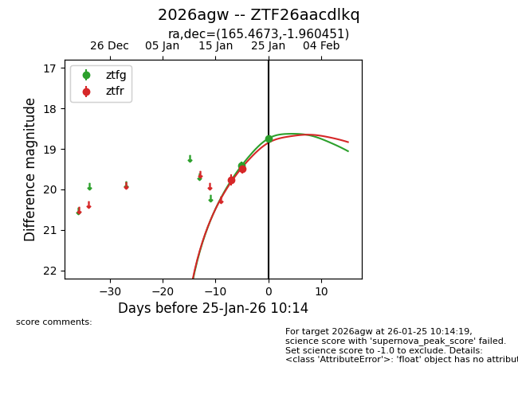
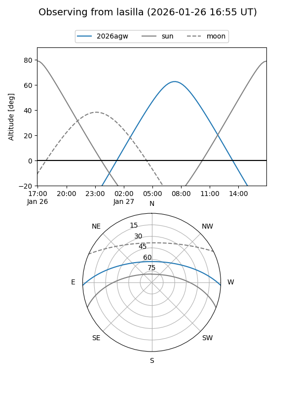
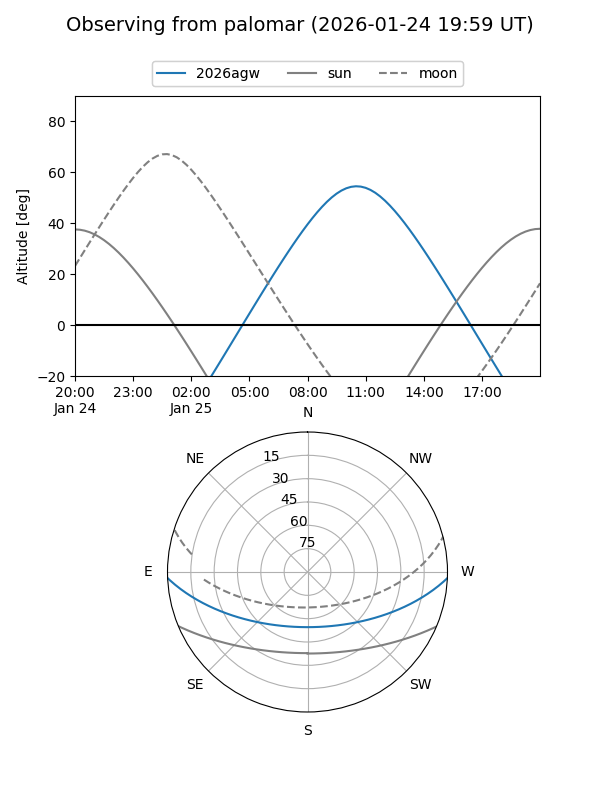
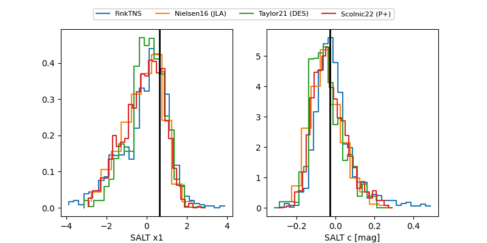

2026agw
Target 2026agw at 2026-01-27 10:16
Aliases and brokers:
FINK: link
Lasair: link
ALeRCE: link
TNS: link
YSE: link
alt names
ZTF26aacdlkq (ztf,fink_ztf)
2026agw (tns,yse)
Coordinates:
equatorial (ra, dec) = 165.4673,-1.96045
equatorial (HMS+DMS) = 11:01:52.16,-01:57:37.62
galactic (l, b) = (256.3482,+50.72710)
Flags:
Photometry:
last ztfg=18.74, ztfr=18.95
2 ztfg, 3 ztfr detections
Lightcurve

Visibility


Additional plots
